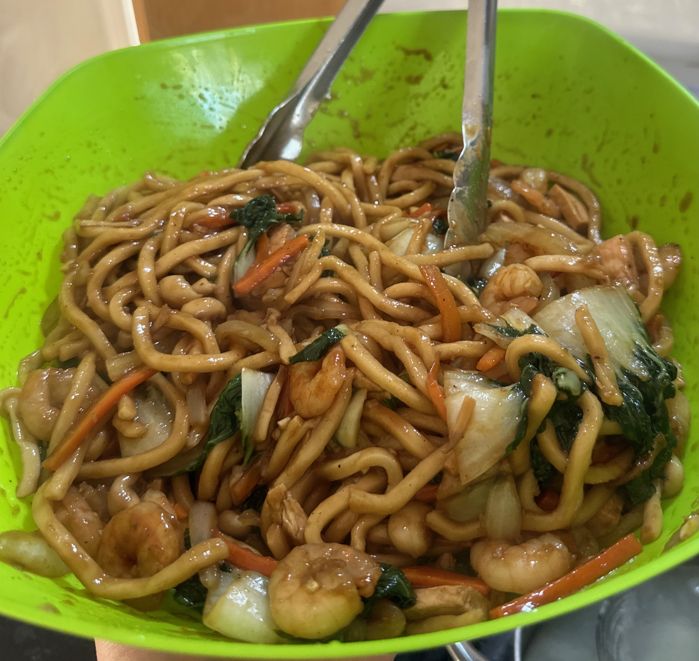

Yaki Udon Recipe

Yaki Udon is a Japanese dish consisting of thick, smooth, and chewy udon noodles stir-fried with a variety of ingredients like vegetables, meat (often pork, chicken, or seafood), and seasoned with a savory sauce, typically made from soy sauce, mirin, and dashi. It's known for its delightful mix of textures and flavors, offering a satisfying and hearty meal.
Ingredients
- Udon Noodles
- cooked Chicken Breast
- cooked Shrimp
- Carrots, julienne
- 1/2 Onion
- Shimeji Mushrooms
- Cabbage (or in this case, bok choy)
- 5 cloves of garlic
- 10 ml cooking oil
- seasonings: salt, black pepper, MSG, ground white pepper to taste
Sauce
- 70 ml soy sauce
- 30 ml oyster sauce
- 20 g brown sugar
- 10 g mirin or shao xing wine
Steps:
- Start by making sure you have all your prep ready because once you start cooking it all happens very quickly. Have all your vegetables chopped, your prawns ready and your noodles blanched to the packet instructions and chilled under cold water.
- Mix all the sauces with the crushed garlic so it's ready to go.
- In a wok or large frying pan over high heat, start by stir frying your veggies for 3-4 minutes or until they develop some colour and are tender.
- Next, add your prawns and cooked chicken breast and spring onions and stir fry for 2 minutes. Then, add the Udon noodles.
- Add the sauce to the pan, pour it around the outside of the edge and stir fry for 3-4 minutes or until everything is the same colour.
- Serve in a bowl and enjoy!